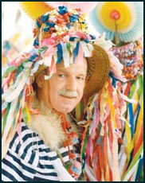
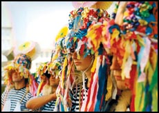

"Sunt student la Arte Plastice și vă propun organizarea unei tabere de creație la Jeiăni"
 Spre rușinea mea, am auzit pentru prima oară, datorită articolului dvs., despre istro-români, și sunt uimit că cineva în zilele noastre mai are timp să se gândească și la origini, la rădăcini, într-o lume din ce în ce mai preocupată de viitor decât de trecut. Sunt student în anul IV la Universitatea de Arte Plastice București, secția Sculptură, și as dori să mă alătur la promovarea acestor oameni cu o propunere: organizarea unei tabere de creație: pictură, sculptură în Jeiăni sau Sușnievița. Astfel va fi un schimb bilateral de identitate lingvistică și culturală. Am certitudinea că nu voi fi singurul care ar participa la un asemenea simpozion. Le-am povestit mai multor colegi despre acest articol și am căzut de acord ca indiferent de împrejurare, măcar o dată să ajungem și noi la acești oameni. Vă mulțumesc!
Soare Valentin
"Strălucire și competență"
Este remarcabil cum d-na Pețan reușește întotdeauna să scrie atât de emoționant, fie că este vorba de subiecte pur științifice, fie de teme grave, ca aceasta de acum. Remarcabila este și varietatea de subiecte, iar domnia sa dă dovadă de o strălucitoare competență. Cu o persoană ca d-na Pețan în Ministerul Culturii, lucrurile ar putea începe să meargă bine și în cultura românească.
Ștefan Comănescu
"Mă ofer voluntar"
Dacă veți avea nevoie în inițierea și derularea unor proiecte, școli de vară, realizarea unor pliante, a unor acțiuni care să răspundă apelului "Salvați istro-românii" (studenții de la facultățile de filologie, istorie-sociologie din întreaga țară, asociațiile studențești se pot implica, pot răspunde acestui apel, în liceele de filologie pot fi propuse ca discipline opționale "Dialectele românești. Istro-românii," și pot fi și alte idei), eu mă ofer voluntar încă de acum. Trebuie să reușim! Sunt învățătoare și absolventă a Facultății de Teologie, specializarea Asistență socială. Dacă pregătirea și ajutorul meu va vor fi de folos în demersurile dvs. viitoare, vă mulțumesc pentru răbdarea de a-mi fi citit rândurile... Cu multă considerație pentru ceea ce faceți.
Elena Caravan
"Aș vrea să donez cărți"
Sunt o cititoare a revistei dvs. și m-a impresionat articolul "Istro-românii" al d-lui Bogdan Lupescu. Am o parte din cărțile colecției "Biblioteca pentru toți" într-o stare foarte bună și aș vrea să le donez. Ma gândesc dacă le putem trimite acelor oameni, care ar putea citi în limba română. Dacă credeți că ar fi bine, puteți să-mi scrieți cum pot merge aceste cărți la ei.
Ileana Ionescu
"Sper că se poate face ceva pentru ei"
Felicitări, "Formula As," pentru că ați fost acolo și ne-ați adus și nouă vești despre frații noștri istro-români, despre care se știe atât de puțin! Sper să se poată face ceva pentru ei și pentru graiul lor românesc, atât de încercat și de periclitat. Bravo!
Alina Sterian
"Extraordinar!"
E multă vreme de când n-am mai citit articole atât de reușite. Bravo, domnilor! Deci, se poate...
Geni Fieraru
"Excelent noul serial despre istro-români"
Excelent noul serial despre cea mai oropsită ramură a poporului român, istro-românii. Aștept cu deosebit interes venirea primilor reprezentanți ai acestora în România, la studii sau doar în vizită, după ce timp de secole au fost pur și simplu rupți de patria mamă. Mult succes în continuare, în munca de promovare a adevăratelor valori culturale românești și de ajutorare a celor aflați în situații disperate.
Cristi Rimer
"Mulți oameni se vor bucura să vă întindă o mână de ajutor"
 Apreciez din ce în ce mai mult revista voastră. Este o pagină de suflet și de cultură, în egală măsura. Dintre multele articole care m-au impresionat, aș pune la loc de cinste pe acelea care se referă la neamul românesc. De la voi, mulți dintre români au aflat despre comunitățile românești din Bulgaria sau din Croația, sau despre cei care ne sunt rude apropiate, cum ar fi friulii din Italia. Tot de la voi am aflat despre tăblițele de plumb de la Sinaia, realist vorbind, o pată de neșters pentru istoria noastră, dacă ne gândim cu câtă inconștienta originalele au fost distruse. De la voi se știu lucruri pe care școala din zilele noastre, din păcate, nu ne-a învățat. Și pentru că ați adus în atenția publică și pe istro-români, a căror limbă este amenințată azi cu dispariția, sper să vă continuați demersul și să publicați și alte articole despre ei. Poate că ar fi bine să organizați și donații de cărți românești pentru aceștia. Cred că la apelul dvs., mulți oameni se vor bucura să vă întindă o mână de ajutor. În definitiv, salvarea acestei limbi este și responsabilitatea noastră. Limba istro-română, ca și toate graiurile românești din spațiul balcanic, păstrează elemente vechi de limbă tracă sau, cum apreciază unii cercetători, daco-română, un tezaur prin a cărui dispariție ar fi sărăcită însăși cultura universală. Așa cum s-a sugerat și în articolul dvs., cred ca ar fi util să îi invităm pe istro-români, mai tineri sau mai bătrâni, măcar pentru câteva zile în România. În felul acesta, poate se va înțelege ca un unicat - cum este limba și cultura istro-românilor - este atât de scump, încât nu există preț pentru a fi cumpărat. Consider că fundațiile din România, la rugămintea dvs., vor fi onorate să se implice, prin sprijinul lor financiar, în acest proiect. Poate ultimul sprijin care mai poate fi acordat în acest ultim ceas. În speranța că toate acestea vor avea un ecou, vă salut, cu aleasă considerație.
Alina Sârbu
"Să fim mândri de ceea ce suntem"
Din păcate, avem atât de multe lucruri de descoperit și de învățat despre noi, despre poporul român. Avem poate cea mai veche istorie din spațiul european. Cultura noastră pierde din ce în ce mai mult teren. Păcat! Ar trebui să fim mândri de ceea ce suntem. Atunci când se aude imnul național și flutură steagul pe catarg, când un sportiv câștigă o medalie de aur, emoțiile sunt mari și mândria și mai mare. Sentimente care azi s-au pierdut.
Bocșan Gabriela
"Exemplul d-lui doctor Rațiu este extraordinar!"
Am terminat de citit articolul semnat de Bogdan Lupescu doar de câteva minute. Am rămas înmărmurit și nu știu dacă mă credeți, dar am lacrimi la colțurile ochilor. E ceva de necrezut. Relatările din articol tind să-mi confirme și să-mi întărească convingerile personale despre trecutului neamului nostru. Descoperirea existenței acestor vlahi (istro-români) este ca o călătorie în timp, în urmă cu un mileniu; în primul rând, este o șansă unică de a observa, studia și analiza limba străveche a neamului nostru. Avem șansa de a intra în contact cu trecutul nostru, putând observa cine am fost. știind cine suntem, poate vom reuși în cele din urmă cu ajutorul lui Dumnezeu să descoperim încotro ne îndreptăm. Câți dintre noi ne-am pus întrebarea care e rostul neamului nostru pe pământ? De ce ajung străinii să se lupte pentru frații noștri mai mult decât majoritatea românilor, cu mici excepții, bineînțeles. Exemplul d-lui dr. Emil Petru Rațiu este extraordinar. El ne demonstrează că se poate face totuși ceva. Munca sa necontenită și timpul petrecut în a redacta, edita și distribui unica revistă în graiul fraților noștri rumeri nu a rămas fără rezultat. Revenind la adevărul istoric expus în reportajul de mai sus, se certifică faptul că încă dinaintea migrației slavilor, pe tot teritoriul de la Marea Adriatică și până la Marea Neagră se găseau vorbitori ai aceleiași limbi (numiți-o cum doriți: e mai greu să o denumim româna veche, mai degrabă pre-română; las pe seama experților și a persoanelor competente această denumire). Cel mai important lucru este acela că istro-românii au reușit să-și mențină limba timp de milenii, în timp ce mulți români din diasporă se pare că preferă să-și învețe copiii limba țării unde locuiesc, uitând cât de importantă este păstrarea limbii materne. Haideți să nu uităm cine suntem, să devenim mândri de ceea ce suntem prin faptele noastre; fie că e vorba de cele mai simple lucruri din viața de zi cu zi, fie că ne referim la fapte de amploarea celor săvârșite de d-l dr. Emil Petru Rațiu. Aș dori să trezesc în sufletele voastre acea licărire de speranță, acea idee că nu suntem lipsiți de importanță, că fiecare avem un rost pe acest pământ, că avem o moștenire extraordinară, care ne-a fost transmisă de înaintașii noștri, iar noi avem datoria și obligația morală de a o transmite mai departe urmașilor noștri, curată și nealterată, așa cum am moștenit-o. Aceasta este limba noastră!
Negre Adrian
"Felicitări domnului Bogdan Lupescu!"
M-a impresionat foarte mult acest articol din care am aflat despre acești "frați" ai noștri, despre care nu mulți români știu. Din păcate, cei care știu, și cărora li s-a solicitat sprijin (pentru că pot face ceva pentru părticica aceasta a neamului nostru) nu răspund... Rușinos! Ce putem face noi, românii de rând? Eu întind ambele mâini, doar să știu cu ce pot ajuta...
Carla Maria
"Ce ne-am face noi, cei din diaspora, fără această revistă Formula As?"
Citind acest articol, am plâns pe săturate. Nu mă pot opri nici acum, când postez comentariul acesta. M-au impresionat mult soarta acestor români veritabili, durerea lor după patria lor ancestrală, pe care o iubesc, deși ea i-a uitat sau neglijat, tăria lor și speranța că cineva se va interesa de ei și de soarta lor. Apreciez efortul lor de supraviețuire culturală, cât și al celor de alt neam care-i apreciază. Mă întreb ce ne-am face noi, cei din diaspora, fără această revistă "Formula As," și tot personalul ce o deservește? Mulțumesc lui Dumnezeu că existați pentru români, oriunde ar trăi ei. Vă mulțumesc că existați și pentru istro-românii însingurați. Ar fi bine dacă, sub o formă sau alta, ne-am putea apropia de aceștia, ca să știe că nu sunt uitați. Trebuie să-i vizităm în toate felurile, iar pe dvs. vă rog să le luați interviuri, căci acestea vor contribui la scrierea istoriei adevărate a țării noastre. Vă mulțumesc.
Filip Ioan
"Alții își inventează rădăcini, în vreme ce noi..."
Mare păcat și mare rușine, că nimeni din țara asta a noastră nu îi cunoaște, nu îi sprijină, nu este interesat de acei oameni. Este ca și când ți-ai uita rădăcinile, strămoșii, bunicii! Alții își inventează rădăcini sau sapă pentru a găsi măcar o urmă a trecerii strămoșilor prin anumite locuri. Noi îi avem, trăiesc, cuvântă într-un grai pe care îl putem înțelege... și-i lăsăm în plata Domnului! Cine nu-și prețuiește istoria... vai de viitorul lui!
Lucia Novac
"Poate citește articolul și domnul Cioroianu"
Mulțumesc mult pentru reportaj. Am încă lacrimi în ochi. Sper să apuc ziua când vor veni lacrimi și în ochii celor ce ar trebui să facă ceea ce de sute de ani așteaptă istro-românii. Poate citește articolul și domnul Cioroianu. E nu numai ministrul de externe al României, dar și istoric și om de cultură.
Ionescu Mihail
Jos pălăria în fața unui astfel de român!"
M-au uimit, întristat și bucurat, în același timp, aceste deosebite rânduri publicate în "Formula As". Indolența guvernanților de la București e proverbială, și nu mai miră pe nimeni. Nu se va face nimic pentru această comunitate, pentru ca nimănui (cu putere de decizie) nu-i pasă. Singurul lucru care îi interesează este chivernisirea rapidă. Rușine, ambasadorilor perindați pe acolo. Mi-e o greață... bleah! Toata stima și afecțiunea pentru d-l Emil Petru Rațiu! Să-i dea Dumnezeu sănătate multă!
Lizuca Barbul
"Trimiteți-i, cu dedicație, domnului ministru Cioroianu cele două articole"
Cele două articole despre istro-români sunt nu numai deosebit de interesante, dar și binevenite. Ceva îmi spune că lucrurile nu vor rămâne ca până acum. Pe ce mă bazez? În primul rând, pe faptul că d-l Cioroianu este istoric la bază și prin urmare poate aprecia cum se cuvine cam care ar fi rolul MAE în sprijinirea acestei minorități. Mi-aș permite să le dau un sfat autorilor articolului: trimiteți-i, cu dedicație, domnului ministru Cioroianu cele două articole, iar după câteva zile, solicitați-i o audiență. Veți avea ocazia să discutați problema în detaliu și, totodată, să stabiliți, împreună cu domnia sa, ce măsuri concrete vor fi luate. Sunt convins că va înțelege cât de importantă este această problemă și lucrurile nu vor rămâne ca până acum. Cred că este absolută nevoie să se pună bazele unei fundații sau a unei societăți de prietenie. Și cine altcineva ar putea s-o înființeze, decât cei de la "Formula As"? Mă angajez să mă înscriu printre primii. S-ar putea numi "Istro-România"! Succes!
Woland
"Să încurajam un turism al neuitării de neam"
Complimente pentru un articol care te lasă fără grai. Istro-românii s-au salvat singuri, voi ziariștii i-ați redescoperit și ni i-ați povestit, și dacă Mahomed nu se duce la munte, se duce muntele la Mahomed, așa și noi... Ce să așteptam din partea autorităților? În următoarea vacanță, voi alege un itinerar inedit, și poate ca la următoarea sărbătoare a satului, ne putem regăsi și vorbi cu acești fârtați. Să încurajăm un turism al neuitării de neam. Cei care au făcut drumul până în aceste sate e posibil să ne îndrume (în mare) traseul de la Trieste, pentru a economisi timp și energie. Mulțumesc anticipat pentru colaborare.
Mihaela Florea
"M-am trezit față-n față cu străbunii mei"
Cine nu crede ca o călătorie în timp este posibilă se înșeală amarnic! Acest articol minunat o demonstrează! Citind cele scrise de dvs., m-a podidit plânsul, pentru că efectiv am simțit că m-am teleportat cu multe secole în urmă, când era "un singur mare norod, înainte de slavi, de la Adriatica și până la Marea Neagră" și m-am trezit față în față cu străbunii mei! Cu străbunii noștri, ai tuturor românilor! Nu vreau să îi reneg, acum că i-am găsit, și sunt sigură că sunt mulți care gândesc așa. Vreau să fac ceva, dar nu știu ce, pentru că acești "vlahi," prin ale căror vene curge același sânge cu al meu, să nu se mai simtă singuri. Vă mulțumesc că existați, frați de peste timp!
Gabriela Tasica
Istro-românii! O nouă temă istorică, o nouă susținere exemplară din partea cititorilor revistei "Formula As". Ecoul campaniilor noastre de presă este, pur și simplu, copleșitor. Și înălțător, totodată. Zeci de scrisori și e-mail-uri aprind hârtia și circuitele internetului. Sute de voluntari cer dreptul la linia întâi! Să obții atâtea adeziuni, într-o lume care-și reneagă cu sânge rece identitatea, este pur și simplu un fenomen. Și de presă, dar și de stare de spirit. Și totuși, explicația este simplă. Patriotismul - cuvânt de bază din fondul principal al limbii române, împotriva căruia s-a stârnit un veritabil război de ultragiere - reprezintă, în realitate, una din marile dominante sufletești și spirituale ale românilor de acasă și din toate colțurile pământului. Un energizant fără putere de comparație. Dovadă, chiar ecourile publicate (printr-o selecție "sângeroasă") în paginile de față ale revistei, devenite, practic, un angajament public de promovare și de susținere a cauzei românilor istrioți.
Cu aleasă recunoștință pentru reacția dvs. fierbinte, promitem să vă ducem mai departe mesajul, transformând problema istro-română într-o campanie de durată a revistei "Formula As". Dumnezeu ne iubește și va fi cu noi, pas de pas!
Sânziana Pop
August 27, 2007
© 2007 Formula As